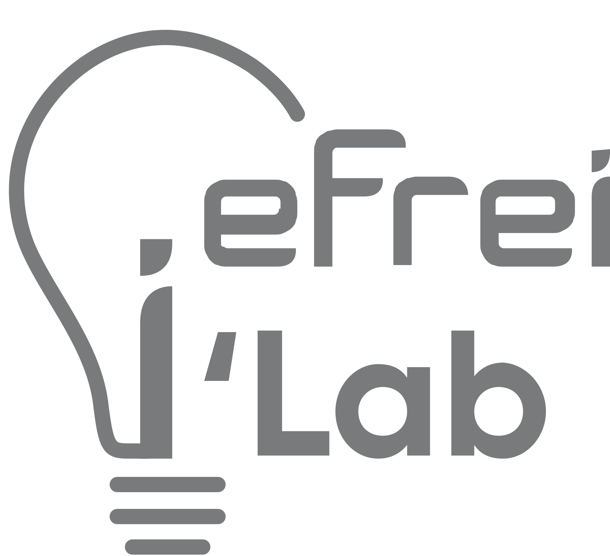
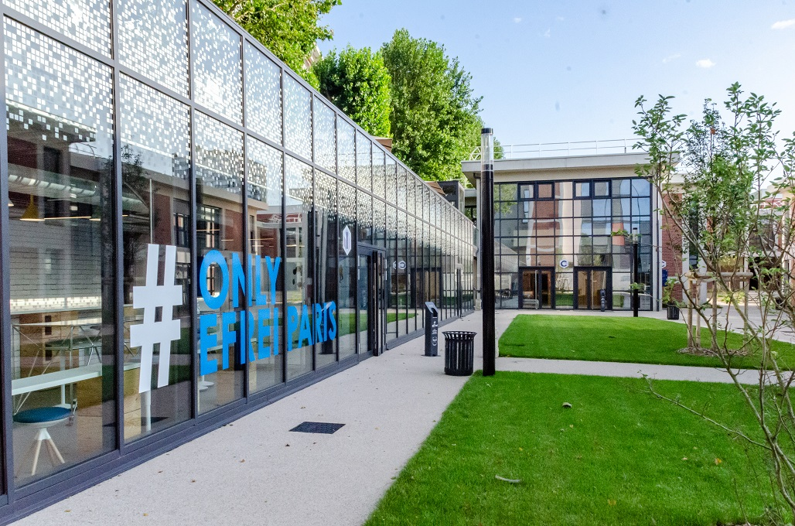

Table of Contents

Innovation Lab EFREI Paris
Actualités
- Soirée porte ouverte - Mercredi 04 octobre à partir de 17h - Don't be shy, come say hi
- Repair Café - Jeudi 05/10 et 07/12 à partir de 18h - Viens réparer ton cuiseur à riz!
- Jam Acoustique - Jeudi 19/10 en co-orga avec Live Efrei - /On a dit Fa bémol /
- Atelier Fabrication - Jeudi 14/11 à midi - On y fabrique (presque) tout…
- Formations - Venez vous former à l'utilisation des machines - ça serait dommage de s'en priver
Présentation
 L'Innovation Lab est un tiers lieu au sein de l'école permettant aux étudiants ainsi qu'aux enseignants, chercheurs et intervenants extérieurs de réaliser leurs projets. Ces projets peuvent être académiques, personnels, associatifs… Le lieu se divise en deux grands espaces:
- Le premier est un espace de travail en libre accès se situant à gauche en rentrant par la porte centrale. A moins que cet espace ne soit reservé, vous pouvez vous y installer pour y travailler seul ou en groupe.
- Le deuxième espace est un espace de fabrication (ou fablab) dont l'accès est reglementé car on y retrouve les machines et les espaces de stockages.
L'Innovation Lab est géré par les Fablab Manager et une équipe d'étudiants encadrants. Ils sont responsables de l'organisation du lieu, de la maintenance des machines, de l'accueil et de la formation des utilisateurs… En général, l'espace de fabrication est ouvert aux utilisateurs durant les permanences des étudiants encadrants, dont l'agenda est ci dessous. Afin d'utiliser les machines, les utilisateurs doivent suivre une formation et obtenir un open badge. Tout est décrit ci dessous.
Agenda
Permanences, évenements, formations… tout est indiqué sur l'agenda ci dessous.
Fablab Manager
Pour toutes questions vous pouvez écrire à remi.griot@efrei.fr et marion.cragnolini@efrei.fr
Les étudiants encadrants
Les étudiants encadrants co-gèrent l'Innovation Lab avec les Fablab manager. Ils dispensent les formations à l'utilisation des machines et sont responsables du bon fonctionnement du lieu.
Liste des étudiants encadrants
Envie de participer à la vie du lieu? Vous pouvez envoyer votre candidature aux Fablab Manager.
Equipements
Voici les prinipaux espaces et equipements de l'Innovation Lab:
- Impression 3D
- Découpe Laser
- Fraiseuse Numérique
- Espace electronique
- Espace de réalité virtuelle
- Outillage
A noter que des espaces de stockages pour vos projets sont egalement disponibles.
Pour en savoir plus: equipements
Formations
Les dates et horaires de formations sont inscrites sur l'agenda. Elles se déroulent par groupe de 5 personnes maximum et sont dispensées par des étudiants encadrants.
Elles vous permettent d’acquérir les bases indispensables afin d’utiliser les machines.
Vous y aborderez les notions de conceptions, de fabrication ainsi que les consignes de sécurités.
À la suite de la formation, rendez vous sur Moodle (espace Innovation Lab) où vous aurez à passer un questionnaire vous permettant d’obtenir un Open Badge. C’est un certificat vous enregistrant
comme étudiant autorisé à vous servir des machines. Comme dit dans le règlement intérieur, les machines sont accessibles seulement
durant les permanences sous la supervision des encadrants.
Impression 3D, Scanner 3D, découpe laser, électronique… Pensez à préciser la formation qui
vous intéresse lors de la prise de rendez-vous avec un étudiant encadrant. Si vous êtes indécis, l’impression 3D est certainement un bon début.
Reglement intérieur
Projets
Les utilisateurs de l'I-Lab s'engagent à remplir une fiche pour chaque projet qu'ils réalisent. Cette fiche est rapide à remplir et permet de recenser les usages de l'I-Lab.
FAQ
Des questions? On essaye d'y répondre ici : Foire aux questions
Liens
En panne d'idée ou de fournisseurs, voici quelques bonnes adresses